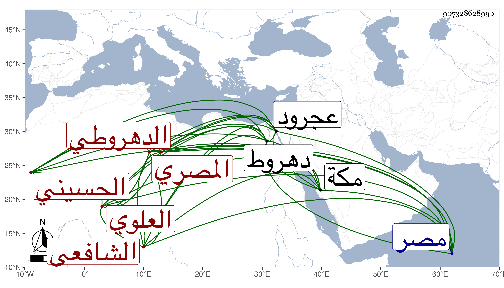

0902Sakhawi.DawLamic.ITO20230111-ara1.EIS1600.907328628990
Biography ID: 907328628990
321
أحمد بن محمد بن أبي بكر بن محمد بن عمر بن الشيخ أبي الحسن علي الشهاب الحسيني العلوي الدهروطي ثم المصري الشافعي ويعرف بابن الدقاق . ولد بدهروط وتحول منها لمصر وأخذ الفقه عن والعربية عن ابن عمار وناب في القضاء وكان مات في رجوعه من الحج في المحرم سنة ست وستين ودفن بعجرود وكان قد جاور بمكة وأقرأ .
